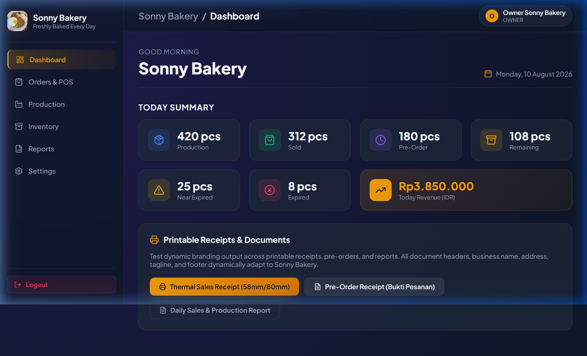
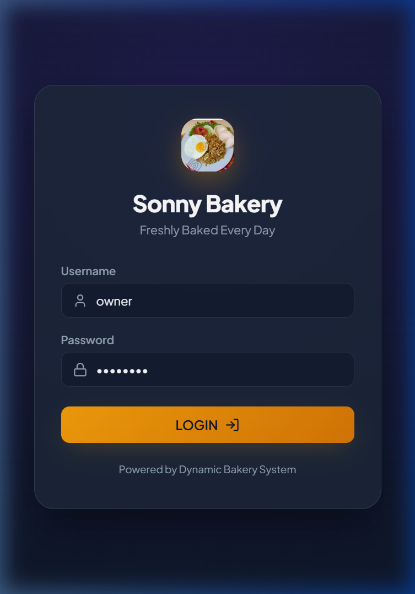
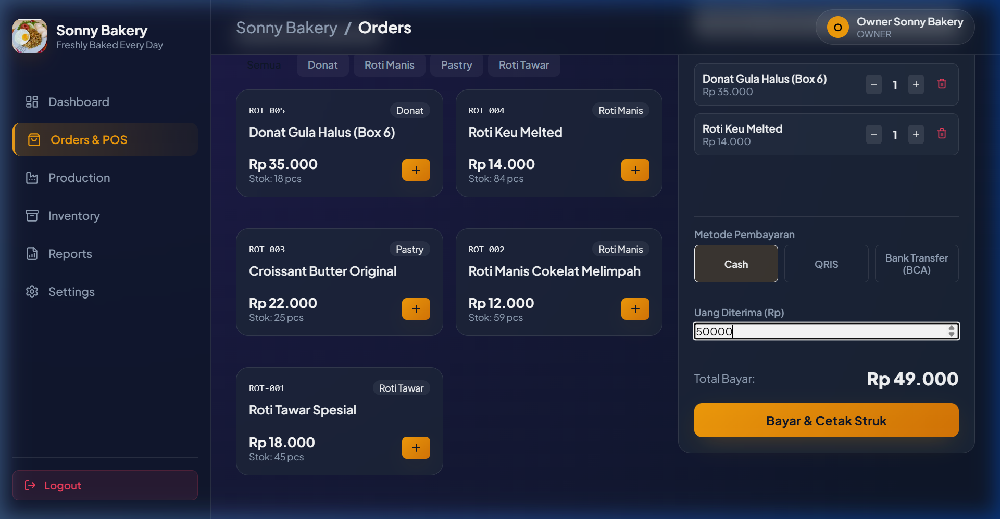
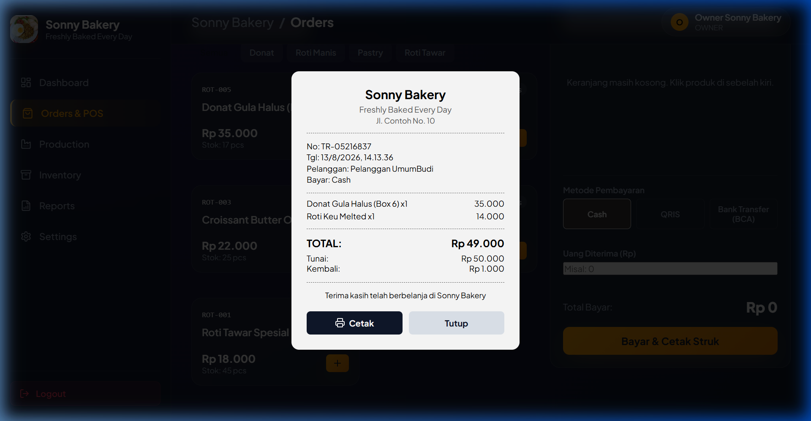
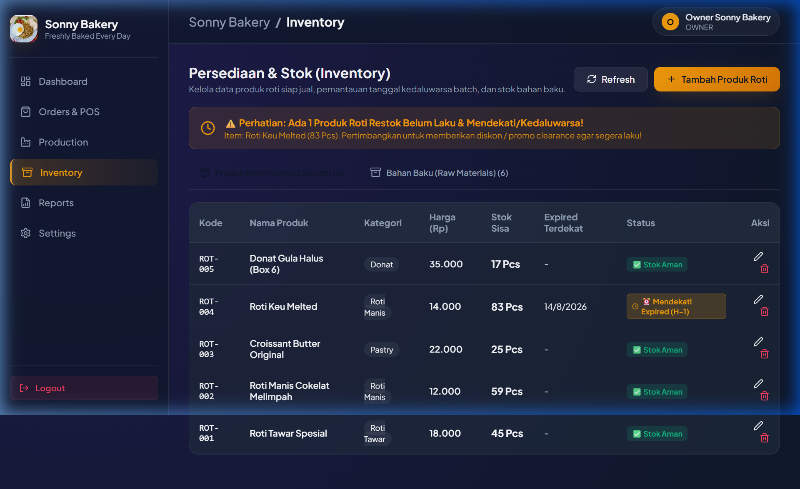
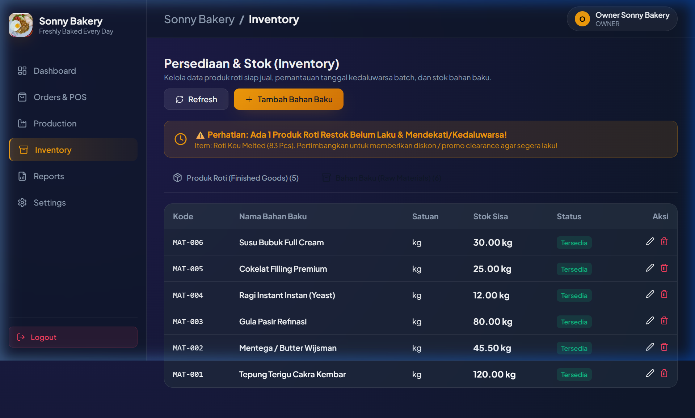
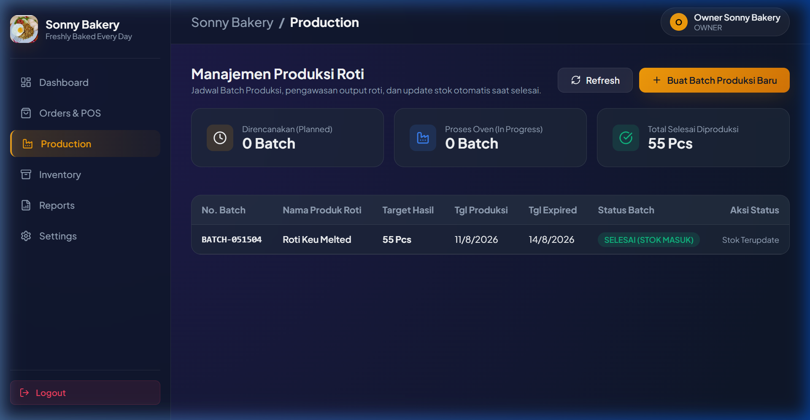
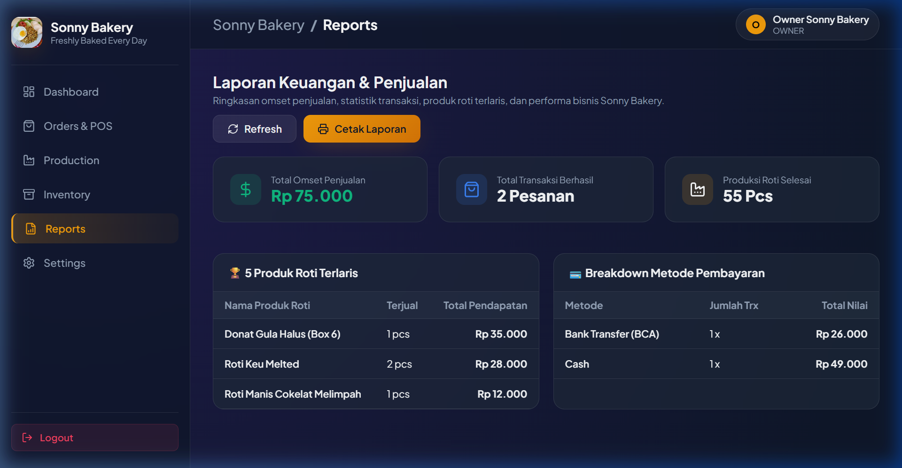
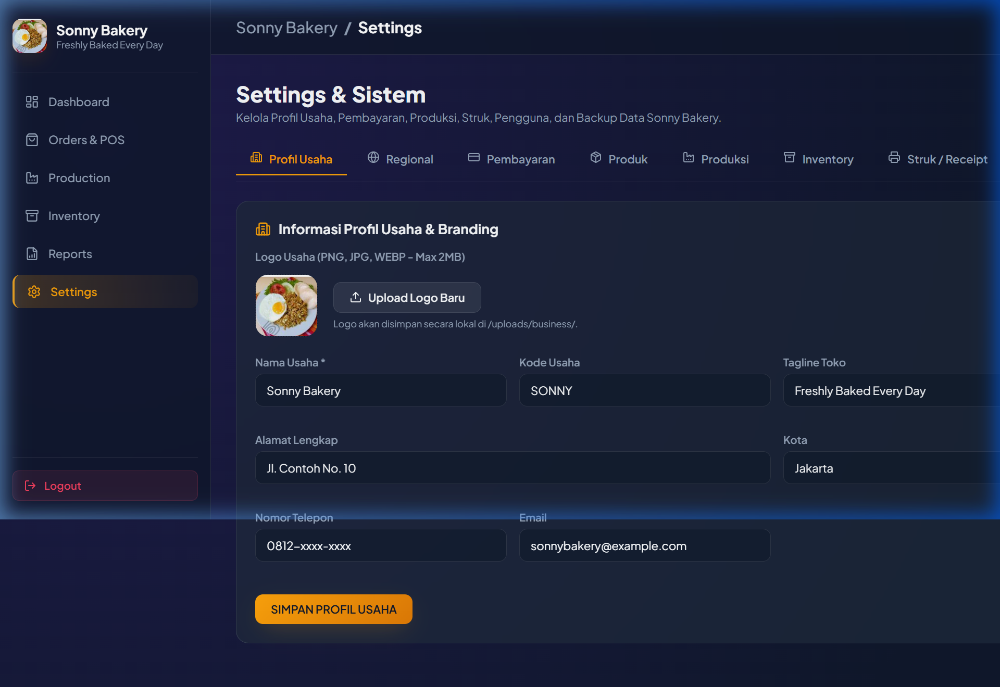
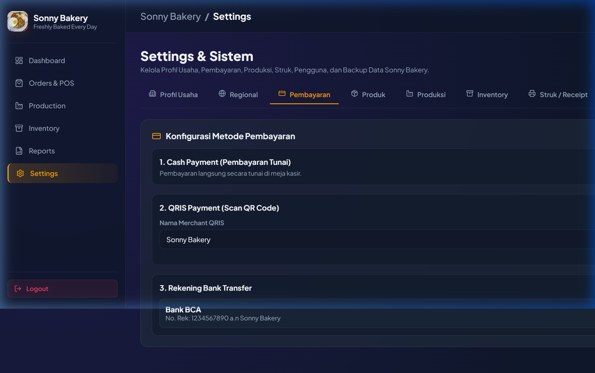

TukangRoti (Sonny Bakery)
Sistem manajemen produksi, inventaris, kasir POS (Point of Sale), dan pesanan toko roti terintegrasi berbasis React 19, TypeScript, Vite, Express, Prisma ORM, dan PostgreSQL.
Integrated bakery production, inventory, POS cashier, thermal receipt printing, and order management system built with React 19, TypeScript, Vite, Express, Prisma ORM, and PostgreSQL.

01. Ringkasan Eksekutif & Tujuan Utama 01. Executive Summary & Core Objectives
TukangRoti (Sonny Bakery) dirancang untuk menyelesaikan tantangan operasional bisnis toko roti modern. Dalam usaha bakery, pencatatan persediaan roti jadi (*Finished Goods*) dan bahan baku (*Raw Materials*) harus dikelola secara presisi untuk menghindari kerugian akibat bahan kedaluwarsa atau kehabisan stok adonan saat lonjakan pesanan.
Sistem ini mengintegrasikan seluruh rantai operasional toko roti dari Setup Awal Bisnis, Autentikasi Pengguna Berbasis Peran (RBAC), Kasir POS dengan cetak struk thermal, Peringatan Dini Kedaluwarsa (H-1), Manajemen Batch Oven Produksi, hingga Pengaturan Identitas Toko secara Dinamis.
TukangRoti (Sonny Bakery) was engineered to solve complex operational challenges faced by modern artisanal bakeries. Managing bakery operations requires real-time tracking of finished baked goods as well as perishable raw ingredients to prevent stock wastage and production bottlenecks.
This application seamlessly integrates the entire bakery workflow: Interactive Business Setup Wizard, Role-Based Access Control (RBAC), Point of Sale (POS) Kasir with thermal receipt printing, Near-Expired Warning alerts (H-1), Oven Batch Production scheduling, and Dynamic Store Branding.
Setup Interaktif Interactive Setup Wizard
Pengecekan otomatis saat instalasi baru untuk memandu pemilik usaha membuat akun Owner pertama, mengisi profil bisnis, dan mengatur mata uang. Automatic detection of fresh installations guiding owners to create their initial account, configure business profile, and currency settings.
POS & Struk Thermal POS Kasir & Thermal Receipts
Kasir cepat dengan dukungan pembayaran Cash, QRIS, dan Bank Transfer, kalkulasi kembalian otomatis, serta cetak struk thermal 58mm/80mm. Rapid checkout supporting Cash, QRIS, and Bank Transfer with automated change calculation and thermal receipt printing (58mm/80mm).
Stok & Batch Oven Stock & Batch Oven Control
Pemisahan persediaan Roti Jadi dan Bahan Baku, deteksi roti mendekati expired (H-1), dan otomatisasi stok masuk saat batch oven selesai. Dual inventory tracking for Finished Goods and Raw Ingredients, near-expiry alerts, and automatic stock sync upon batch completion.
02. Modul Fitur Utama & Antarmuka Aplikasi 02. Core Feature Modules & Showcase
1. Autentikasi & Penyiapan Awal Toko (Setup Wizard) 1. Authentication & Interactive Setup Wizard

Keamanan JWT & Role-Based Access Control JWT Security & Role-Based Access Control
Keamanan aplikasi didukung enkripsi password Bcrypt dan token JWT. Akses fitur disesuaikan dengan peran pengguna:
System security features Bcrypt password hashing and JWT authentication. Access controls enforce strict role privileges:
- OWNER: Akses penuh ke seluruh sistem, laporan keuangan, dan pengaturan toko.Full control over financials, reports, user roles, and store branding.
- MANAGER: Pengelolaan inventaris, jadwal produksi, dan laporan harian.Inventory management, batch production planning, and daily reports.
- KASIR: Fokus ke transaksi penjualan POS dan percetakan struk.Dedicated POS checkout interface and receipt printing.
- PRODUKSI: Pemantauan status oven dan pembaruan hasil batch roti.Oven batch tracking and batch completion status updates.
2. Kasir POS & Pratinjau Struk Belanja 2. Point of Sale (POS) & Thermal Receipt Engine


Modul Orders & POS memberikan kemudahan bagi kasir untuk menyaring katalog roti berdasarkan kategori (Donat, Roti Manis, Pastry, Roti Tawar). Kasir dapat memasukkan nama pelanggan, memilih metode pembayaran (Cash/QRIS/Bank Transfer), dan mencetak struk belanja thermal secara langsung yang sudah memuat logo dan header toko yang dinamis.
The Orders & POS module enables fast product selection with category tabs (Donut, Sweet Bread, Pastry, Toast). Cashiers enter customer details, select payment methods (Cash/QRIS/Bank Transfer), and trigger thermal receipts with live store branding.
3. Pengelolaan Stok Ganda: Roti Jadi & Bahan Baku 3. Dual Inventory Tracking: Bakery Goods & Raw Materials


Peringatan Kedaluwarsa Dini (Near-Expired Warning): Roti yang mendekati tanggal kedaluwarsa (default H-1) otomatis ditandai dengan badge oranye/kuning baik di halaman inventaris maupun di dashboard. Hal ini memudahkan pemilik toko untuk segera menggelar program diskon Happy Hour / Clearance Sale untuk menekan potensi food waste.
Near-Expired Early Warning System: Baked items approaching their expiration date (default H-1) trigger prominent warning badges on both Inventory and Dashboard pages, allowing staff to initiate promotional discounts before product expiration.
4. Batch Oven Produksi, Laporan Analitik, & Pengaturan System 4. Oven Production Batches, Reports Analytics, & System Settings




03. Arsitektur Teknis & Tech Stack 03. Technical Architecture & Tech Stack
Frontend Layer
- Framework: React 19 & TypeScript
- Build Tool: Vite
- Icon Set: Lucide React
- Styling: Vanilla CSS Custom Tokens, Glassmorphism, Dark Theme
Backend Layer
- Runtime: Node.js & Express (TypeScript)
- Security: JWT Tokens & BcryptJS
- File Upload: Multer Engine
- ORM & DB Driver: Prisma ORM & PostgreSQL client (`pg`)
Database & Infra
- Database: PostgreSQL 16
- Containerization: Docker & Docker Compose
- Concurrent Execution: NPM `concurrently`
04. Panduan Cara Menjalankan Aplikasi (Step-by-Step) 04. Step-by-Step Setup & Getting Started
Ikuti langkah-langkah berikut untuk menjalankan server backend dan client frontend secara bersamaan:
Follow these steps to run both backend Express server and Vite React client concurrently:
-
Install Dependensi Project:
npm install
-
Jalankan Container PostgreSQL (Docker Compose):
docker-compose up -d # PostgreSQL otomatis berjalan di port 5433
-
Push Schema Prisma & Seed Data Awal:
npm run db:push
npm run db:seed -
Jalankan Mode Development (Server & Client):
npm run dev
Username:
owner | Password: owner123